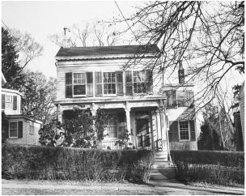

112 Mercer Street
梅瑟街112号
Princeton 普林斯顿
The ocean liner Westmoreland, which carried Einstein, at age 54, to what would become his new home country, arrived in New York Harbor on October 17, 1933. Waiting to meet him in the rain at the Twenty-third Street pier was an official committee led by his friend Samuel Untermyer, a prominent attorney, who carried some orchids he had grown, plus a group of cheerleaders that was scheduled to parade with him to a welcoming pageant.
1933年10月17日，远洋班轮“威斯特摩兰”载着54岁的爱因斯坦抵达纽约港，这里将成为他新的祖国。他的律师朋友塞缪尔·安特梅耶带来了自己种的一些兰花，率领一个官方委员会在23街码头冒雨等候。此外还有欢呼的人群准备举行盛大的游行来欢迎他。
Einstein and his entourage, however, were nowhere to be found. Abraham Flexner, the director of the Institute for Advanced Study, was obsessed with shielding him from publicity, whatever Einstein’s quirky preferences might be. So he had sent a tugboat, with two Institute trustees, to spirit Einstein away from the Westmoreland as soon as it cleared quarantine. “Make no statement and give no interviews on any subject,” he had cabled. To reiterate the message, he sent a letter with one of the trustees who greeted Einstein’s ship. “Your safety in America depends upon silence and refraining from attendance at public functions,” it said.1
然而，爱因斯坦一行不知去向。高等研究院院长弗莱克斯纳竭尽所能让爱因斯坦不受公众注意，不论爱因斯坦可能有什么古怪的偏好。于是，他派研究院的两位董事会成员乘坐一艘拖船，等隔离一旦解除，就迅速把爱因斯坦从“威斯特摩兰”带走。“不要就任何主题发表声明或接受采访。”他发电报说。为了重申这一要求，他让一位迎接爱因斯坦的董事会成员带去了一封信。“你在美国的安全取决于你默不作声，不在公开场合露面。”信上说。
Carrying his violin case, with a profusion of hair poking out from a wide-brimmed black hat, Einstein surreptitiously disembarked onto the tug, which then ferried him and his party to the Battery, where a car was waiting to whisk them to Princeton. “All Dr. Einstein wants is to be left in peace and quiet,” Flexner told reporters.2
爱因斯坦手拿提琴匣，头戴一顶宽边黑帽，帽檐周围露出浓密的头发。他和随行人员秘密上了拖船，一直坐到炮台公园，那里有一辆车等待接他们到普林斯顿。“爱因斯坦博士想要的就是安宁和平静。”弗莱克斯纳对记者们说。
Actually, he also wanted a newspaper and an ice cream cone. So as soon as he had checked into Princeton’s Peacock Inn, he changed into casual clothes and, smoking his pipe, went walking to a newsstand, where he bought an afternoon paper and chuckled over the headlines about the mystery of his whereabouts. Then he walked into an ice cream parlor, the Baltimore, pointed his thumb at the cone a young divinity student had just bought, and then pointed at himself. As the waitress made change for him, she announced, “This one goes in my memory book.”3
实际上，他还想要一份报纸和一个冰激凌蛋卷。所以他一住进普林斯顿的孔雀酒店就换上便装，点上烟斗，和瓦尔特·迈尔到报摊买了一份晚报，看到关于他行踪的报道，不由得哈哈大笑。接着他走进了一家“巴尔的摩”冰激凌店，用拇指指着一个年轻的神学学生刚刚买过的蛋卷，又指指他自己。女服务生在找他钱时说：“我会永远记住这一个。”
Einstein was given a corner office in a university hall that served as the temporary headquarters of the Institute. There were eighteen scholars in residence then, including the mathematicians Oswald Veblen (nephew of the social theorist Thorstein Veblen) and John von Neumann, a pioneer of computer theory. When shown his office, he was asked what equipment he might need. “A desk or table, a chair, paper and pencils,” he replied. “Oh yes, and a large wastebasket, so I can throw away all my mistakes.”4
研究院的临时总部设在普林斯顿的范氏楼，爱因斯坦在那里有一个办公室。当时有18位学者住在那里，其中包括数学家奥斯瓦尔德·维布伦（社会理论家索尔斯坦·维布伦的侄子）和计算机理论的先驱冯·诺伊曼。当他参观办公室时，有人问他还需要什么设备。“一张课桌或桌子，一把椅子，纸和铅笔，”他回答说，“哦，对了，还要一个大废纸篓，以便我扔掉所有的错误。”
He and Elsa soon found a house to rent, which they celebrated by hosting a small musical recital featuring the works of Haydn and Mozart. The noted Russian violinist Toscha Seidel played lead, with Einstein as second fiddle. In return for some violin tips, Einstein tried to explain relativity theory to Seidel and made him some drawings of moving rods contracting in length.5
他和爱尔莎很快就找到了租住的房子，他们举办了一个小型音乐会以示庆祝。音乐会以海顿和莫扎特的作品为主，由著名俄国小提琴家托沙·塞德尔领奏，爱因斯坦担任第二小提琴手。塞德尔传授了一些小提琴技巧，作为答谢，爱因斯坦试图给他讲解相对论，画了一些图显示运动长杆的长度会收缩。
Thus began a proliferation of popular tales in town about Einstein’s love for music. One involved Einstein playing in a quartet with violin virtuoso Fritz Kreisler. At a certain point they got out of sync. Kreisler stopped playing and turned to Einstein in mock exasperation. “What’s the matter, professor, can’t you count?”6 More poignantly, there was an evening where a Christian prayer group gathered to make intercessions for persecuted Jews. Einstein surprised them by asking if he could come. He brought his violin and, as if offering a prayer, played a solo.7
于是乎，小镇上流传的有关爱因斯坦热爱音乐的故事越来越多。其中一则说，爱因斯坦与小提琴大师弗里茨·克莱斯勒共同演奏四重奏，在某个地方他们没有同步。克莱斯勒停止了演奏，气冲冲地嘲笑爱因斯坦说：“怎么回事，教授，您不会数数吗？” 还有更动人的一则故事，一天晚上，一个基督教祈祷团举行集会，为遭受迫害的犹太人祷告。让他们没想到的是，爱因斯坦问他是否可以参加。他带来了小提琴，演奏了一首独奏曲，仿佛在祷告一样。
Many of his performances were purely impromptu. That first Halloween, he disarmed some astonished trick-or-treaters, a group of 12-year-old girls who had come with the intent of playing a prank, by appearing at the door and serenading them with his violin. And at Christmastime, when members of the First Presbyterian Church came by to sing carols, he stepped out into the snow, borrowed a violin from one of the women, and accompanied them. “He was just a lovely person,” one of them recalled.8
他许多表演纯粹是即兴的。那年万圣节，一群玩“不请客就捣蛋”（rick-or-treaters） 的12岁小姑娘们打算搞恶作剧，这时他出现在门口，拉起了小提琴，让她们一个个目瞪口呆，攻击兴致尽失。而圣诞节期间，当第一长老会的成员路过这里演唱赞美诗时，他走到雪地里，向一位女士借了一把小提琴为他们伴奏。“他真是一个可爱的人。”有人回忆说。
Einstein soon acquired an image, which grew into a near legend but was nevertheless based on reality, of being a kindly and gentle professor, distracted at times but unfailingly sweet, who wandered about lost in thought, helped children with their homework, and rarely combed his hair or wore socks. With his amused sense of self-awareness, he catered to such perceptions. “I’m a kind of ancient figure known primarily for his non-use of socks and wheeled out on special occasions as a curiosity,” he joked. His slightly disheveled appearance was partly an assertion of his simplicity and partly a mild act of rebellion. “I have reached an age when, if someone tells me to wear socks, I don’t have to,” he told a neighbor.9
在人们心目中，爱因斯坦是一个和蔼善良、温文尔雅的教授，可爱但有时心不在焉，经常一边散步一边沉浸在思考之中，还会帮助孩子们完成家庭作业，很少梳头或穿袜子。这几乎成了一个传奇，但并非没有事实依据。这种理解也符合他那种带有自知之明的幽默感。“我这种老古董主要是因为不穿袜子而出名，在特定场合会被当成怪人。”他开玩笑说。他不太修边幅，这既是对其朴素的肯定，又是一种温和的反叛行为。“人到了我这个年纪，如果有人让我穿袜子，我可以不穿。”他对邻居说。
His baggy, comfortable clothes became a symbol of his lack of pretense. He had a leather jacket that he tended to wear to events both formal and informal. When a friend found out that he had a mild allergy to wool sweaters, she went to a surplus store and bought him some cotton sweatshirts, which he wore all the time. And his dismissive attitude toward haircuts and grooming was so infectious that Elsa, Margot, and his sister, Maja, all sported the same disheveled gray profusion.
他松垂宽大的衣服也成了他缺少虚伪的一个象征。他有一件皮夹克，经常在各种场合穿。一位朋友发现他对羊绒衫有轻度的过敏，便去一家剩余物资商店给他买了一些宽松无领的棉运动衫，这些衣服他终生都在穿。他对发型和打扮的轻视态度极富感染力，以至于爱尔莎、玛戈特和妹妹玛雅都开始炫耀她们同样凌乱的灰色头发。
He was able to make his rumpled-genius image as famous as Chaplin did the little tramp. He was kindly yet aloof, brilliant yet baffled. He floated around with a distracted air and a wry sensibility. He exuded honesty to a fault, was sometimes but not always as naïve as he seemed, cared passionately about humanity and sometimes about people. He would fix his gaze on cosmic truths and global issues, which allowed him to seem detached from the here and now. This role he played was not far from the truth, but he enjoyed playing it to the hilt, knowing that it was such a great role.
他能够使这种头发凌乱的天才形象与卓别林塑造的小流浪汉一样出名。他既为人和善又超然物外，既才华横溢又有点摸不着头脑。带着一种心不在焉和冷嘲式的幽默感，爱因斯坦到处漂泊，四海为家。对于缺点和过错，他表现得很诚实，有时（但并不总是）的确看起来幼稚。他既挂心整个人类的命运，也关心具体的人。对宇宙真理和世界议题的专注使他显得似乎不太关心眼前的事情。他扮演的这种角色距离真理不远，但他愿意将它做到最大限度，因为这种角色是如此伟大。
He had also, by then, adapted willingly to the role Elsa played, that of a wife who could be both doting and demanding, protective yet afflicted with occasional social aspirations. They had grown comfortable together, after some rough patches. “I manage him,” she said proudly, “but I never let him know that I manage him.”10
那时，他也已经很适应爱尔莎所扮演的角色。作为妻子，爱尔莎对他既疼爱又苛求，既是保护伞又会受到社会欲望的驱使。在一些艰难的磨合之后，他们已经能够和谐相处。“我管着他，”她自豪地说，“但我从不让他知道我在管他。”
Actually, he knew, and he found it mildly amusing. He surrendered, for example, to Elsa’s nagging that he smoked too much and on Thanksgiving bet her that he would be able to abstain from his pipe until the new year. When Elsa boasted of this at a dinner party, Einstein grumbled, “You see, I am no longer a slave to my pipe, but I am a slave to that woman.” Einstein kept his word, but “he got up at daylight on New Year’s morning, and he hasn’t had his pipe out of his mouth since except to eat and sleep,” Elsa told neighbors a few days after the deal was over.11
实际上，爱因斯坦并非不知道，他觉得这样挺开心的。例如，爱尔莎抱怨他吸烟太多，他在感恩节跟爱尔莎打赌说，他将在一年时间里不碰烟斗。在一次宴会上，爱尔莎向众人吹噓这件事，爱因斯坦抱怨说：“你看，我不再是烟斗的奴隶，却成了那个女人的奴隶。”爱因斯坦信守了诺言，但“从新年第一天早晨起床开始，除了吃饭和睡觉，他的烟斗就再没有离过口”，爱尔莎在这次协议结束后不久对邻居们说。
The greatest source of friction for Einstein came from Flexner’s desire to protect him from publicity. Einstein was, as always, less fastidious about this than were his friends, patrons, and self-appointed protectors. An occasional flash of the limelight made his eyes twinkle. More important, he was willing and even eager to endure such indignities if he could use his fame to raise money and sympathy for the worsening plight of European Jews.
最令爱因斯坦感到不快的是弗莱克斯纳，他总想让爱因斯坦不受公众的注意。和往常一样，爱因斯坦对此并不像他的朋友、赞助人和自称的保护者们那样讲究。只要镁光灯一闪，他的眼睛马上就会亮起来。更重要的是，如果他能够用自己的名声为情况不断恶化的欧洲犹太人筹款和博得同情的话，他甘愿甚至渴望忍受这样的举动。
Such political activism made Einstein’s penchant for publicity even more disconcerting to Flexner, an old-line and assimilated American Jew. It might provoke anti-Semitism, he thought, especially in Princeton, where the Institute was luring Jewish scholars into an environment that was, to say the least, socially wary of them.12
弗莱克斯纳是一个被同化了的保守的美国犹太人。在政治激进主义的影响下，爱因斯坦对名声的喜好使他深感不安。他认为这也许会激起反犹主义，特别是普林斯顿，至少在社交方面很警惕他们，而此时研究院正在吸引犹太学者到这里。
Flexner was particularly upset when Einstein, quite charmingly, agreed one Saturday to meet at his home with a group of boys from a Newark school who had named their science club after him. Elsa baked cookies, and when the discussion turned to Jewish political leaders, she noted, “I don’t think there is any anti-Semitism in this country.” Einstein agreed. It would have amounted to no more than a sweet visit, except that the adviser who accompanied the boys wrote a colorful account, focusing on Einstein’s thoughts about the plight of Jews, that was bannered atop the front page of the Newark Sunday Ledger.13
弗莱克斯纳非常沮丧地听说，爱因斯坦已经欣然应允星期六在家接见来自纽华克（Newark）—所学校的一群孩子，他们以爱因斯坦的名字命名了他们的科学俱乐部。爱尔莎烘烤了小甜饼，当讨论转到犹太政治领袖时，她指出：“我不认为这个国家有什么反犹主义。”爱因斯坦深以为然。这只不过是一次愉快的访问，只不过带队老师写了一篇华美的文章，主要记述了爱因斯坦关于犹太人困境的想法，刊登在纽华克《星期日纪录报》的头版显著位置。
Flexner was furious. “I simply want to protect him,” he wrote in a sharp letter to Elsa, and he sent the Newark article to her with a stern note attached. “This is exactly the sort of thing that seems to me absolutely unworthy of Professor Einstein,” he scolded. “It will hurt him in the esteem of his colleagues, for they will believe that he seeks such publicity, and I do not see how they can be convinced that such is not the case.”14
弗莱克斯纳极为愤怒。“我只是想保护他。”他给爱尔莎写了一封措辞严厉的信，并把那篇文章寄给了她。“在我看来，这种事情绝对不值得爱因斯坦教授去做，”他斥责道，“它将有损同事们对他的尊敬，因为他们会认为他热衷于宣传自己，我不知道如何能让他们相信这不是事实。”
Flexner went on to ask Elsa to dissuade her husband from being featured at a scheduled musical recital in Manhattan, which he had already accepted, that was to raise money for Jewish refugees. But like her husband, Elsa was not totally averse to publicity, nor to helping Jewish causes, and she resented Flexner’s attempts at control. So she replied with a very frank refusal.
接着，弗莱克斯纳要爱尔莎劝阻她的丈夫参加曼哈顿的一场音乐会，爱因斯坦已经答应出演，以便为犹太难民筹款。但和丈夫一样，爱尔莎并不反感公众的注意，也不反对帮助犹太事业，而是不满弗莱克斯纳企图控制这一切，于是她直截了当地拒绝了。
That provoked Flexner to send an astonishingly blunt letter the next day, which he noted he had discussed with the president of Princeton University. Echoing the sentiments of some of Einstein’s European friends, including the Borns, Flexner warned Elsa that if Jews got too much publicity it would stoke anti-Semitism:
这促使弗莱克斯纳第二天又给爱尔莎写了一封信，语气惊人地强硬，他说他已经与普林斯顿大学校长谈过这件事。就像爱因斯坦的一些欧洲朋友（包括玻恩夫妇）那样，弗莱克斯纳警告爱尔莎，如果犹太人太受公众注意，将会激起反犹主义：
It is perfectly possible to create anti-Semitic feeling in the United States. There is no danger that any such feeling would be created except by the Jews themselves. There are already signs which are unmistakable that anti-Semitism has increased in America. It is because I am myself a Jew and because I wish to help oppressed Jews in Germany that my efforts, though continuous and in a measure successful, are absolutely quiet and anonymous . . . The questions involved are the dignity of your husband and the Institute according to the highest American standards and the most effective way of helping the Jewish race in America and in Europe.15
在美国完全有可能激起反犹情绪，而引发这种情绪的只可能是犹太人自己。有明确迹象表明，反犹主义已经在美国抬头。正因为我本人是一个犹太人，也因为我希望帮助受压迫的德国犹太人，我尽管不断努力，并且取得了一定成功，但绝对默不作声，也不透露姓名……这里涉及的是您丈夫以及美国最高水准的研究院的尊严，还有如何最有效地帮助美国和欧洲的犹太人。
That same day, Flexner wrote Einstein directly to make the case that Jews like themselves should keep a low profile because a penchant for publicity could arouse anti-Semitism. “I have felt this from the moment that Hitler began his anti-Jewish policy, and I have acted accordingly,” he wrote.“There have been indications in American universities that Jewish students and Jewish professors will suffer unless the utmost caution is used.”16
同一天，弗莱克斯纳写信给爱因斯坦，声称像他们这样的犹太人应当保持低调，因为热衷于自我宣传会激起反犹主义。“从希特勒开始推行反犹政策的那一刻起，我就感觉到了这一点，并相应采取了对策，”他写道，“在美国大学已经有迹象显示，倘若不处处谨小慎微，犹太学生和犹太教授将会遭殃。”
Not surprisingly, Einstein went ahead with his planned benefit recital in Manhattan, for which 264 guests paid $25 apiece to attend. It featured Bach’s Concerto for Two Violins in D-minor and Mozart’s G Major Quartet. It was even opened to the press. “He became so absorbed in the music,”Time magazine reported, “that with a far-away look he was still plucking at the strings when the performance was all over.”17
毫不奇怪，爱因斯坦按照预定的计划在曼哈顿举行了音乐会义演，264位客人购买了25美元一张的入场券。演出曲目主要是巴赫的D小调双小提琴协奏曲和莫扎特的G大调四重奏。媒体也对这场演出做了报道。“他深深地陶醉于音乐中，”《时代》周刊说，“整场演出结束时，他仍在拨弄琴弦，凝视远方。”
In his attempt to prevent such events, Flexner had begun intercepting Einstein’s mail and declining invitations on his behalf. The stage was thus set for a showdown when Rabbi Stephen Wise of New York decided it would be a good idea to get Einstein invited to visit President Franklin Roosevelt, which Wise hoped would focus attention on Germany’s treatment of Jews. “F.D.R. has not lifted a finger on behalf of the Jews of Germany, and this would be little enough,” Wise wrote a friend.18
为了阻止这些活动，弗莱克斯纳开始截取爱因斯坦的邮件，并代表他拒绝邀请。事情即将有个了断。纽约的拉比斯蒂芬·怀斯认为爱因斯坦应当去拜访罗斯福总统，与他讨论一下德国的犹太人政策。“罗斯福尚未帮助过德国犹太人，这次会见算是一点功劳。”怀斯写信给一位朋友。
The result was a telephone call from Roosevelt’s social secretary, Colonel Marvin MacIntyre, inviting Einstein to the White House. When Flexner found out, he was furious. He called the White House and gave a stern lecture to the somewhat surprised Colonel MacIntyre. All invitations must go through him, Flexner said, and on Einstein’s behalf he declined.
最终，罗斯福的社交秘书马文·麦金太尔打来电话，邀请爱因斯坦访问白宫。弗莱克斯纳事先得到了消息。他气急败坏地给白宫打电话，代表爱因斯坦冷冷地回绝了麦金太尔。弗莱克斯纳说，所有邀请都必须经他同意。
For good measure, Flexner proceeded to write an official letter to the president. “I felt myself compelled this afternoon to explain to your secretary,” Flexner said, “that Professor Einstein had come to Princeton for the purpose of carrying out his scientific work in seclusion and that it was absolutely impossible to make any exception which would inevitably bring him into public notice.”
不仅如此，弗莱克斯纳还给总统写了一封正式信件。“我今天下午不得不向您的秘书做出解释，”弗莱克斯纳说，“爱因斯坦教授来普林斯顿是为了在隐居状态下从事科学工作，绝对不能让他引起公众的注意。”
Einstein knew none of this until Henry Morgenthau, a prominent Jewish leader who was about to become treasury secretary, inquired about the apparent snub. Dismayed to discover Flexner’s presumption, Einstein wrote to Eleanor Roosevelt, his political soul mate. “You can hardly imagine of what great interest it would have been for me to meet the man who is tackling with gigantic energy the greatest and most difficult problem of our time,” he wrote. “However, as a matter of fact, no invitation whatever has reached me.”
要不是即将担任财政部长的杰出的犹太领袖亨利·摩根索问起这件事，爱因斯坦一直还蒙在鼓里。在沮丧地发现弗莱克斯纳的肆意妄为之后，爱因斯坦写信给他在政治上意气相投的知音埃莉诺·罗斯福。“您简直难以想象，我对拜见这位正在以巨大精力处理我们时代最伟大、最艰难问题的人是多么感兴趣，”他写道，“然而事实上，没有任何邀请送达我这里。”
Eleanor Roosevelt answered personally and politely. The confusion came, she explained, because Flexner had been so adamant in his phone call to the White House. “I hope you and Mrs. Einstein will come sometime soon,” she added. Elsa responded graciously. “First excuse my poor English please,” she wrote. “Dr. Einstein and myself accept with feelings of gratitude your very kind invitation.”
埃莉诺·罗斯福礼貌地回了信。她解释说，这是一场误会，因为弗莱克斯纳给白宫打电话时语气非常坚定。“我希望您和爱因斯坦夫人很快就能来。”她补充说。爱尔莎得体地回了信。“首先请原谅我糟糕的英语，”她写道，“爱因斯坦博士和我带着感激的心情接受您友好的邀请。”
He and Elsa arrived at the White House on January 24, 1934, had dinner, and spent the night. The president was able to converse with them in passable German. Among other things, they discussed Roosevelt’s marine prints and Einstein’s love for sailing. The next morning, Einstein wrote an eight-line piece of doggerel on a White House note card to Queen Elisabeth of the Belgians marking his visit, but he made no public statements.19
1934年1月24日，爱因斯坦和爱尔莎来到白宫，参加了宴会，还住了一晚。总统以差强人意的德语跟他们交谈，其间谈到了罗斯福的海洋画和爱因斯坦对帆船运动的爱好。第二天早上，爱因斯坦在一张白宫的短柬卡上给比利时的伊丽莎白王后写了一首八行的打油诗，纪念他到访白宫，但没有发表公开声明。
Flexner’s interference infuriated Einstein. He complained about it in a letter to Rabbi Wise—on which he put as his return address “Concentration Camp, Princeton”—and he sent a five-page litany of Flexner’s meddling to the Institute’s trustees. Either they must assure him that there would be no more “constant interference of the type that no self-respecting person would tolerate,” Einstein threatened, or “I would propose that I discuss with you severing my relationship with your institute in a dignified manner.”20
弗莱克斯纳的干涉激怒了爱因斯坦。他在给怀斯拉比的信中发泄了自己的愤怒（信的落款是“普林斯顿集中营”），还给研究院的董事会成员寄去了一封长达5页的信。爱因斯坦威胁说，或者向他保证不会再有“此类干涉发生，这是任何一个有自尊的人都无法容忍的”，或者“商讨以一种有尊严的方式与你们的研究院断绝关系”。
Einstein prevailed, and Flexner backed off. But as a result, he lost his influence with Flexner, whom he would later refer to as one of his “few enemies” in Princeton.21 When Erwin Schrödinger, Einstein’s fellow traveler in the minefields of quantum mechanics, arrived as a refugee in Princeton that March, he was offered a job at the university. But he wanted instead to be tapped for the Institute for Advanced Study. Einstein lobbied Flexner on his behalf, but to no avail. Flexner was doing him no more favors, even if it meant depriving the Institute of Schrödinger.
爱因斯坦取得了胜利，弗莱克斯纳再也不敢惹他了。但结果是，爱因斯坦失去了对弗莱克斯纳的影响力。他后来称弗莱克斯纳是他在普林斯顿“极少数敌人”之一。 那年3月，量子力学的先驱薛定谔作为难民到访普林斯顿大学，被授予一个职位。但他希望加盟高等研究院。为此，爱因斯坦积极游说弗莱克斯纳，但根本不管用。弗莱克斯纳不再帮助他，即使这意味着将薛定谔拒之门外。
During his short stay in Princeton, Schrödinger asked Einstein if he was indeed going to come back to Oxford later that spring, as scheduled. He had called himself a “bird of passage” when heading off to Caltech in 1931, and it was unclear, perhaps even in his own mind, whether he saw this as a liberation or a lament. But now he found himself comfortable in Princeton, with no desire to take wing again.
在访问普林斯顿期间，薛定谔问爱因斯坦那年春天是否会如期回到牛津。1931年，爱因斯坦在前往加州理工学院时称自己是一只“迁徙之鸟”，也许连他自己都不清楚这到底是一种解放还是一种悲伤。但是现在，他在普林斯顿生活得很惬意，不愿再离开了。
“Why should an old fellow like me not enjoy peace and quiet for once?” he asked his friend Max Born. So he told Schrödinger to pass along his sincere regrets. “I am sorry to say that he asked me to write you a definite no,” Schrödinger informed Lindemann. “The reason for his decision is really that he is frightened of all the ado and the fuss that would be laid upon him if he came to Europe.” Einstein also worried that he would be expected to go to Paris and Madrid if he went to Oxford, “and I lack the courage to undertake all this.”22
“为什么像我这样的老家伙不能享受一次平和与安宁呢？”他问朋友玻恩。于是，他请薛定谔转达他诚挚的歉意。“很抱歉，他要我告诉您，他肯定不去了，”薛定谔写信给林德曼，“他之所以有此决定，是因为害怕回到欧洲会遇到各种各样的麻烦。”爱因斯坦还担心如果去了牛津，巴黎和马德里也会希望他去，“我没有勇气接受所有这些邀请”。
The stars had aligned to create for Einstein a sense of inertia, or at least a weariness of further wandering. In addition, Princeton, which he called a “pipe as yet unsmoked” on his first visit in 1921, captured him with its leafy charm and its neo-Gothic echoes of a European university town. “A quaint and ceremonious village of puny demigods strutting on stiff legs,” he called it in a letter to Elisabeth, the queen mother of Belgium since the death of the king.“By ignoring certain social conventions, I have been able to create for myself an atmosphere conducive to study and free from distraction.”23
在命运的安排下，爱因斯坦不由自主地产生了一种惰性，继续流浪将使他感到疲惫。1921年，他第一次访问普林斯顿时曾称它为“一支没有抽过的烟斗”，这个地方颇具欧洲大学城的新哥特风格，以其超凡的魅力吸引着他。“这是一个古雅而讲究礼仪的村落，里面住着一些腿部僵硬而又趾高气扬的半人半神，”他写信给比利时王后，“由于不理会某些社会习俗，我为自己营造了一种氛围，有助于专心致志做研究。”
Einstein particularly liked the fact that America, despite its inequalities of wealth and racial injustices, was more of a meritocracy than Europe. “What makes the new arrival devoted to this country is the democratic trait among the people,” he marveled.“No one humbles himself before another person or class.”24
爱因斯坦特别欣赏的一点是，尽管美国存在着贫富不均和种族偏见，但与欧洲相比更是一个精英管理的社会。“使新来者热爱这个国家的，是人民中间的民主特性，”他赞叹道，“没有谁在别人或别的阶级面前低声下气。”
This was a function of the right of individuals to say and think what they pleased, a trait that had always been important to Einstein. In addition, the lack of stifling traditions encouraged more creativity of the sort he had relished as a student. “American youth has the good fortune not to have its outlook troubled by outworn traditions,” he noted.25
随自己的心意说话和思考是每个人的权利，爱因斯坦自始至终都很看重这一点。此外，由于缺少传统的束缚，他从学生时代起就备加珍视的创造性更容易被激发出来。“美国青年有幸能够不让其观点被陈腐的传统所束缚。”他指出。
Elsa likewise loved Princeton, which was important to Einstein. She had taken such good care of him for so long that he had become more solicitous of her desires, particularly her nesting instinct. “The whole of Princeton is one great park with wonderful trees,” she wrote a friend. “We might almost believe that we are in Oxford.”The architecture and countryside reminded her of England, and she felt somewhat guilty that she was so comfortable while others back in Europe were suffering. “We are very happy here, perhaps too happy. Sometimes one has a bad conscience.”26
爱尔莎也很喜欢普林斯顿，这对爱因斯坦很重要。长期以来，爱尔莎一直精心照料着爱因斯坦，他已经非常在乎爱尔莎的感受，特别是其居家本能。“整个普林斯顿就像一个大公园，树长得很好，”她写信给一位朋友，“我们差点以为自己是在牛津。”这里的建筑和乡下风光让她想起了英国，她对自己在这里优哉游哉而别人却在欧洲受苦感到有些歉疚。“我们在这里非常幸福，也许过于幸福了。有时会感到良心不安。”
So in April 1934, just six months after his arrival, Einstein announced that he was staying in Princeton indefinitely and assuming full-time status at the Institute. As it turned out, he would never live anywhere else for the remaining twenty-one years of his life. Nevertheless, he made appearances at the “farewell” parties that had been scheduled that month as fund-raisers for various of his favorite charities. These causes had become almost as important to him as his science. As he declared at one of the events, “Striving for social justice is the most valuable thing to do in life.”27
于是，1934年4月，就在到达这里6个月之后，爱因斯坦宣布他要一直在普林斯顿待下去，在研究院做专职工作。结果，在余下的21年中，他再也没有在另一个地方生活过。当月，他出席了为他最喜欢的一些慈善团体筹款的“告别”宴会。对他来说，这些事情几乎与他的科学同样重要。正如他在一次活动中所宣称的：“为社会正义而努力是生活中最有价值的事情。”
Sadly, just when they had decided to settle in, Elsa had to travel back to Europe to care for her spirited and adventurous elder daughter, Ilse, who had dallied with the romantic radical Georg Nicolai and married the literary journalist Rudolf Kayser. Ilse was afflicted with what they thought was tuberculosis but what turned out to be leukemia, and her condition had taken a turn for the worse. Now she had gone to Paris to be nursed by her sister, Margot.
令人悲伤的是，就在他们决定在普林斯顿安家落户时，爱尔莎不得不回到欧洲，照顾她敢于冒险的大女儿伊尔莎。伊尔莎曾与花花公子尼科莱调情，后来嫁给了文学记者凯泽尔。大家一开始以为伊尔莎得了肺结核，但后来证明是白血病。她的健康状况已经急转直下。她现已转到巴黎，由妹妹玛戈特看护。
Insisting that her problems were mainly psychosomatic, Ilse resisted medications and turned instead to prolonged psychotherapy. Early during her illness, Einstein had tried to persuade her to go to a regular doctor, but she had refused. Now there was little that could be done as the whole family, absent Einstein himself, gathered by her bed in Margot’s Paris apartment.
伊尔莎坚持认为自己的问题主要是身心失调，所以没有接受药物治疗，而是继续采用心理疗法。刚发病的时候，爱因斯坦让她找一个正规的医生，但她没有同意。现在，除爱因斯坦以外的所有家人都来到了玛戈特在巴黎的寓所，聚在她的床前，但此时已经回天乏术。
Ilse’s death devastated Elsa. She “changed and aged,” Margot’s husband recalled, “almost beyond recognition.” Instead of having Ilse’s ashes deposited in a crypt, Elsa had them put in a sealed bag for her. “I cannot be separated,” she said. “I have to have them.” She then sewed the bag inside a pillow so that she could have them close to her on the trip home to America.28
伊尔莎的死令爱尔莎悲痛欲绝。“（她）变得苍老了，”玛戈特的丈夫回忆说，“几乎认不出来了。”她没有将伊尔莎的骨灰存放在教堂地下室，而是放在了一个密封袋里。“我不能和它分开，”她说，“我必须拥有它。”她把袋子缝在了一个枕头里，以便在回美国的路上守在它身边。
Elsa also carried back cases of her husband’s papers, which Margot had earlier smuggled from Berlin to Paris using French diplomatic channels and the anti-Nazi underground. To help get them into America, Elsa enlisted the help of a kindly neighbor from Princeton, Caroline Blackwood, who was on the same ship home.
爱尔莎还带回了几箱丈夫的文稿，这是玛戈特通过法国的外交渠道、凭借反纳粹的经历从柏林偷偷带到巴黎的。爱尔莎乘坐的船上有一位普林斯顿的邻居卡罗琳·布莱克伍德，她帮爱尔莎将这些文稿带回了美国。
Elsa had met the Blackwoods a few months earlier in Princeton, and they mentioned that they were going to Palestine and Europe and wished to meet some Zionist leaders.
几个月前，爱尔莎在普林斯顿见到了布莱克伍德夫妇。他们说准备去巴勒斯坦和欧洲，希望见一些犹太复国主义领袖。
“I didn’t know you were Jews,” Elsa said.
“我不知道你们是犹太人。”爱尔莎说。
Mrs. Blackwood said that they actually were Presbyterian, but there was a deep connection between the Jewish heritage and the Christian, “and besides, Jesus was a Jew.”
布莱克伍德夫人说，他们实际上是长老会教徒，但犹太教传统与基督教传统之间关系很深，“而且，基督是一个犹太人”。
Elsa hugged her. “No Christian has ever said that to me in my life.” She also asked for help in getting a German-language Bible, as they had lost theirs in the move from Berlin. Mrs. Blackwood found her a copy of Martin Luther’s translation, which Elsa clasped to her heart. “I wish I had more faith,” she told Mrs. Blackwood.
爱尔莎拥抱了她：“没有基督徒对我说过这样的话。”她请他们帮忙找一本德语的《圣经》，因为当初从柏林搬家时弄丢了。布莱克伍德夫人送给她一本马丁·路德的译本，爱尔莎将书紧紧抱在胸前。“我希望我能更有信仰。”她对布莱克伍德夫人说。
Elsa had taken note of what liner the Blackwoods were traveling on, and she purposely booked passage on it when she returned to America. One morning she brought Mrs. Blackwood into the ship’s deserted lounge to ask a favor. Because she was not a citizen, she was afraid that her husband’s papers might be held at the border. Would the Blackwoods bring them in?
爱尔莎记下了布莱克伍德夫妇乘坐的班轮号，在返回美国时特意订购了这一班的船票。一天早上，她带布莱克伍德夫妇来到船上的休息室，请求他们帮助。由于自己还不是美国公民，她担心丈夫的论文有可能被边境扣留，想请布莱克伍德夫妇带它们入境。
They agreed, although Mr. Blackwood was careful not to lie on his customs declaration. “Material acquired in Europe for scholarly purposes,” he wrote. Later, Einstein came over in the rain to the Black-woods’ shed to collect his papers. “Did I write this drivel?” he joked as he looked at one journal. But the Blackwoods’ son, who was there, recalled that Einstein “was obviously deeply moved to have his books and papers in his hands.”29
布莱克伍德夫妇同意了，尽管布莱克伍德先生出于谨慎，没有在通关申报表上撒谎。“在欧洲获得的学术材料。”他写道。后来，爱因斯坦冒雨到布莱克伍德家来取他的文稿。“这些胡话是我写的吗？”他看到一篇文章时笑了。不过据当时在场的布莱克伍德夫妇的儿子回忆，爱因斯坦“手拿书和文稿，显然深为感动”。
Ilse’s death, accompanied in the summer of 1934 by Hitler’s consolidation of power during the “Night of the Long Knives,” severed the Einsteins’ remaining bonds with Europe. Margot immigrated that year to Princeton, after she and her odd Russian husband separated. Hans Albert soon followed. She was “not longing for Europe at all,” Elsa wrote Caroline Blackwood soon after returning. “I feel such a homelike feeling for this country.”30
1934年夏天，希特勒在“长刀之夜” 巩固了权力。伊尔莎的去世进一步切断了爱因斯坦与欧洲的联系。同年，玛戈特在与脾气古怪的俄国丈夫马里亚诺夫分居之后便移民到普林斯顿。不久，汉斯·阿尔伯特也来了。爱尔莎在回来后不久给卡罗琳·布莱克伍德写信说，她“完全不想再去欧洲”“我感觉这个国家就像我的家一样”。
Recreations 消遣
When Elsa returned from Europe, she joined Einstein at a summer cottage he had rented in Watch Hill, Rhode Island, a quiet enclave on a peninsula near where Long Island Sound meets the Atlantic. It was perfect for sailing, which is why Einstein, at Elsa’s urging, decided to summer there with his friend Gustav Bucky and his family.
爱尔莎从欧洲回来后，与爱因斯坦在罗得岛的守望山（Watch Hill）租了一栋夏季别墅。这是半岛上的一块僻静之地，附近就是长岛海湾与大西洋的交汇处。这里很适合驾驶帆船，于是在爱尔莎的敦促下，爱因斯坦决定在那里和朋友古斯塔夫·布基一家一起过夏天。
Bucky was a physician, engineer, inventor, and pioneer of X-ray technology. A German who had gained American citizenship during the 1920s, he had met the Einsteins in Berlin. When Einstein came to America, his friendship with Bucky deepened; they even took out a joint patent on a device they came up with to control a photographic diaphragm, and Einstein testified as an expert witness for Bucky in a dispute over another invention.31
布基是一个医生、工程师、发明家和X射线技术的先驱。他本是德国人，20世纪20年代加入了美国国籍，曾在柏林见过爱因斯坦夫妇。爱因斯坦来美国时，与布基加深了友谊。他们发明了一种能够控制摄影光圈的设备，并获得专利，在与另一项发明的竞争中，爱因斯坦作为鉴定人为布基作证。
His son Peter Bucky happily spent time driving Einstein around, and he later wrote down some of his recollections in extensive notebooks. They provide a delightful picture of the mildly eccentric but deeply unaffected Einstein in his later years. Peter tells, for example, of driving in his convertible with Einstein when it suddenly started to rain. Einstein pulled off his hat and put it under his coat. When Peter looked quizzical, Einstein explained: “You see, my hair has withstood water many times before, but I don’t know how many times my hat can.”32
他的儿子彼得·布基开车带爱因斯坦到处逛，后来将自己的一些回忆记了下来。这些文字展现了晚年爱因斯坦那稍显古怪但又真挚自然的个性。有一次，彼得正开着敞篷汽车带爱因斯坦出游，这时忽然下雨了。爱因斯坦摘下帽子，把它放在外套下面。看着彼得疑惑不解的神色，爱因斯坦解释说：“你看，我的头发已经多次挨雨淋了，但我不知道我的帽子能经受多少次。”
Einstein relished the simplicity of life in Watch Hill. He puttered around its lanes and even shopped for groceries with Mrs. Bucky. Most of all, he loved sailing his seventeen-foot wooden boat Tinef, which is Yiddish for a piece of junk. He usually went out on his own, aimlessly and often carelessly. “Frequently he would go all day long, just drifting around,” remembered a member of the local yacht club who went to retrieve him on more than one occasion. “He apparently was just out there meditating.”
爱因斯坦享受着守望山的简朴生活。他在小巷中悠闲地漫步，甚至与布基夫人一起去购物。他特别喜欢驾驶一艘17英尺的木质小艇“提奈夫”（Tinef），意第绪语的意思是“一块废料”。他总是独自驾驶小艇，没有目的，也常常漫不经心。“他往往一去就是一整天，就在随意漂流，”当地游艇俱乐部的一个成员回忆说，他不止一次去救营爱因斯坦，“他看起来像是在那里沉思冥想。”
As he had at Caputh, Einstein would drift with the breeze and sometimes scribble equations in his notebook when becalmed. “Once we all waited with growing concern for his return from an afternoon sail,” Bucky recalls. “Finally, at 11 pm, we decided to send the Coast Guard out to search for him. The guardsmen found him in the Bay, not in the least concerned about his situation.”
和在卡普特一样，爱因斯坦喜欢在微风中泛舟游弋，无风时则在笔记本上演算方程。“我们所有人都越来越焦急地等待他下午返航，”布基回忆说，“直到晚上11时还不见他的踪影，我们只好派海岸巡逻队去搜寻。队员们在海湾找到了他，他对自己一点也不担心。”
At one point a friend gave him an expensive outboard motor for emergency use. Einstein declined. He had a childlike delight about taking small risks—he still never took a life jacket even though he could not swim—and escaping to where he could be by himself. “To the average person, being becalmed for hours might be a terrible trial,” said Bucky. “To Einstein, this could simply have provided more time to think.”33
有一次，一位朋友送给他一台贵重的舷外发动机，以备紧急之用。爱因斯坦拒绝了。对于冒一点风险逃到可以独处的地方，他有一种孩子般的喜悦（虽然不会游泳，但他从不带救生衣）。“对于一般人来说，静静地待上几小时可能是一次艰巨的挑战，”布基说，“但在爱因斯坦看来，这不过是提供了更多的思考时间罢了。”
The sailing rescue sagas continued the following summer, when the Einsteins began renting in Old Lyme, Connecticut, also on Long Island Sound. One such tale even made the New York Times. “Relative Tide and Sand Bars Trap Einstein,” read the headline. The young boys who saved him were invited to the house for raspberry juice.34
第二年夏天，当爱因斯坦夫妇开始在康涅狄格州的老莱姆镇（Old Lyme）以及长岛海湾租房时，营救爱因斯坦的传奇仍在继续。《纽约时报》有这样一篇报道，其大标题写道，“相对的潮汐和（由潮汐形成的）沙洲困住了爱因斯坦”。那些救起他的小男孩被请到屋里喝树莓汁。
Elsa loved the Old Lyme house, although both she and her family found it a bit too imposing. It was set on twenty acres, with a tennis court and swimming pool, and the dining room was so large that they initially were afraid to use it. “Everything is so luxurious here that the first ten days—I swear to you—we ate in the pantry,” Elsa wrote a friend. “The dining room was too magnificent for us.”35
爱尔莎很喜欢老莱姆镇的房子，不过她和家人都觉得它有点过于华丽。它占地20英亩，有一个网球场和一个游泳池，餐厅非常大，他们一开始都没敢用。“这里的一切都很奢华，头十天（我向你发誓）我们是在餐具室吃的，”爱尔莎写信给一位朋友，“对我们来说，餐厅过于华丽了。”
When the summers were over, the Einsteins would visit the Bucky family at their Manhattan home once or twice a month. Einstein would also stay, especially when he was by himself, at the home of the widower Leon Watters, the pharmaceutical company owner he had met in Pasadena. He once surprised Watters by arriving without a dressing gown or pajamas. “When I retire, I sleep as nature made me,” he said. Watters recalled that he did, however, ask to borrow a pencil and notepad for his bedside.
夏天过后，爱因斯坦夫妇每个月都要到布基在曼哈顿的家一两次。爱因斯坦一个人时，也会住在鳏夫沃特斯（即他在帕萨迪纳碰见的那位制药公司老总）的家。有一次，爱因斯坦没带晨衣和睡衣就来了，沃特斯很奇怪。“我退休后总是困了就睡。”爱因斯坦说。不过据沃特斯回忆，他的确借了一支铅笔和一个记事本放在床头。
Out of both politeness and his touch of vanity, Einstein found it hard to decline requests from artists and photographers who wanted him to pose. One weekend in April 1935, when he was staying with Watters, Einstein sat for two artists in one day. His first session was with the wife of Rabbi Stephen Wise, not known for her artistic ability. Why was he doing it? “Because she’s a nice woman,” he answered.
爱因斯坦发现很难拒绝希望为他雕塑或拍照的艺术家和摄影师的要求，这既是出于礼貌，也是出于少许的虚荣。1935年4月的一个周末，他在沃特斯家为两个艺术家摆好姿势坐在那里一整天。第一种坐姿是为拉比怀斯的妻子摆的，而后者的名气并不是因为艺术才能。那他为什么还要那样做？“因为她是一个好女人。”他回答说。
Later that day, Watters picked Einstein up to ferry him to Greenwich Village for a session with the Russian sculptor Sergei Konenkov, a practitioner of Soviet realism, who was producing what would be a distinguished bust of Einstein that is now at the Institute for Advanced Study. Einstein had been introduced to Konenkov through Margot, who was also a sculptor. Soon, all of them became friends with his wife, Margarita Konenkova, who, unbeknown to Einstein, was a Soviet spy. In fact, Einstein would later become, after Elsa’s death, romantically involved with her, which would end up creating, as we shall see, more complexities than he ever knew.36
那天晚些时候，沃特斯和他的司机将爱因斯坦送到了格林尼治村，苏联的现实主义雕塑家谢尔盖·柯年科夫要为他塑像，他创作的这尊著名的爱因斯坦胸像现存于高等研究院。爱因斯坦是通过玛戈特（也是一位雕塑家）的介绍而认识柯年科夫的。不久，他们所有人都成了柯年科夫的妻子玛格丽塔·柯年科娃的朋友。爱因斯坦不知道，她是一个苏联间谍。事实上，爱尔莎死后，爱因斯坦还与她发生了一段风流韵事，我们将会看到 ，最终的结果要比他知道的更为复杂。
Now that they had decided to stay in the United States, it made sense for Einstein to seek citizenship. When Einstein visited the White House, President Roosevelt had suggested that he should accept the offer of some congressmen to have a special bill passed on his behalf, but Einstein instead decided to go through the normal procedures. That meant leaving the country, so that he—and Elsa, Margot, and Helen Dukas—could come in not as visitors but as people seeking citizenship.
既然现在他们已经决定待在美国，那么爱因斯坦加入美国国籍就顺理成章了。爱因斯坦访问白宫时，罗斯福总统曾经提出，他应当接受一些国会议员的建议，即以他的名义通过一个特别法案，但爱因斯坦坚持走正规程序。这就意味着必须先离开这个国家，以使他（以及爱尔莎、玛戈特和杜卡斯）不是作为访客，而是作为寻求国籍的人入境。
So in May 1935 they all sailed on the Queen Mary to Bermuda for a few days to satisfy these formalities. The royal governor was there to greet them when they arrived in Hamilton, and he recommended the island’s two best hotels. Einstein found them stuffy and pretentious. As they walked through town, he saw a modest guest cottage, and that is where they ended up.
于是，为了履行这些正式手续，他们1935年5月乘坐“玛丽皇后”号到百慕大待了几天。抵达百慕大首府汉密尔顿时，皇家总督在那里迎候他们，还介绍了岛上最好的两个宾馆。爱因斯坦发现它们不仅窒闷，而且讲排场。后来在城里散步时，他们看见了一栋风格简朴的旅馆别墅，便在那里住下了。
Einstein declined all official invitations from the Bermuda gentry and socialized instead with a German cook he met at a restaurant, who invited him to come sailing on his little boat. They were away for seven hours, and Elsa feared that Nazi agents may have nabbed her husband. But she found him at the cook’s home, where he had gone to enjoy a dinner of German dishes.37
爱因斯坦拒绝了百慕大社会名流的所有正式邀请，倒是和他在饭馆碰到的一位德国厨师混熟了。他们一起驾驶小艇，出去了七小时。爱尔莎唯恐纳粹的密探将她的丈夫抓了去，后来在厨师家发现了爱因斯坦，他在那里享用了一顿德式大餐。
That summer, a house down the block from the one they were renting in Princeton went on sale. A modest white clapboard structure that peeked through a little front yard onto one of the town’s pleasant tree-lined arteries, 112 Mercer Street was destined to become a world-famous landmark not because of its grandeur but because it so perfectly suited and symbolized the man who lived there. Like the public persona that he adopted in later life, the house was unassuming, sweet, charming, and unpretentious. It sat there right on a main street, highly visible yet slightly cloaked behind a veranda.
那年夏天，他们在普林斯顿租的房子附近有房出售。这是一幢装有护墙楔形板的朴素的白房子，房前小院通向镇上一条景色宜人的林荫路。梅瑟街（Mercer Street）112号注定要成为世界上最著名的住宅之一，不是因为它有多么奢华，而是因为它是房主的完美象征。和晚年的爱因斯坦一样，这幢房子朴素大方，迷人可爱。它就坐落在一条主干道上，因阳台的掩映而不致太过显眼。
Its modest living room was a bit overwhelmed by Elsa’s heavy German furniture, which had somehow caught up with them after all their wanderings. Helen Dukas commandeered the small library on the first floor as a workroom in which she dealt with Einstein’s correspondence and took charge of the only telephone in the house (Princeton 1606 was the unlisted number).
客厅很朴素，里面堆放着爱尔莎那些笨重的德国家具，虽然经过多次搬迁，这些家具一直没有丢掉。一楼的小图书馆是杜卡斯的工作室，她在这里处理爱因斯坦的信件，负责接听家里唯一一部电话（电话号码是普林斯顿1606，没有上电话簿）。
Elsa oversaw the construction of a second-floor office for Einstein. They removed part of the back wall and installed a picture window that looked out on the long and lush backyard garden. Bookcases on both sides went up to the ceiling. A large wooden table, cluttered with papers and pipes and pencils, sat in the center with a view out of the window, and there was an easy chair where Einstein would sit for hours scribbling on a pad of paper in his lap.
爱因斯坦的办公室在二楼，是爱尔莎负责建造的。后墙上装上一扇大落地窗，窗外是一个郁郁葱葱的后花园。两边的书架一直顶到天花板。屋里正中是一个大木桌，上面堆放着论文、烟斗和铅笔；还有一张安乐椅，爱因斯坦可以坐在那里写东西。
The usual pictures of Faraday and Maxwell were tacked on the walls. There was also, of course, one of Newton, although after a while it fell off its hook. To that mix was added a fourth: Mahatma Gandhi, Einstein’s new hero now that his passions were as much political as they were scientific. As a small joke, the only award displayed was a framed certificate of Einstein’s membership in the Bern Scientific Society.
墙上挂着法拉第和麦克斯韦的画像。当然，还有一幅牛顿的，不过没过多久它从钩子上掉下来了。此外还有甘地的画像，在同时投身于政治和科学的爱因斯坦心目中，他现在是新的英雄。陈列出来的唯一奖品是爱因斯坦在伯尔尼科学协会的会员证，证书外还加了框。当然，这是一个小玩笑。
Besides his menagerie of women, the household was joined, over the years, by various pets. There was a parrot named Bibo, who required an unjustifiable amount of medical care; a cat named Tiger; and a white terrier named Chico that had belonged to the Bucky family. Chico was an occasional problem. “The dog is very smart,” Einstein explained. “He feels sorry for me because I receive so much mail. That’s why he tries to bite the mailman.”38
除了一帮女人，家里渐渐也住进来一些宠物。鹦鹉“毕波”大病小病不断，小猫名叫“老虎”，还有原属布基家的小白狗“奇科”，偶尔会惹出麻烦。“这只狗很聪明，”爱因斯坦说，“它很同情我，因为我收的邮件太多了。正因为此，它会咬邮递员。”
“The professor does not drive,” Elsa often said. “It’s too complicated for him.” Instead, he loved to walk, or, more precisely, shuffle, up Mercer Street each morning to his office at the Institute. People often snapped their heads when he passed, but the sight of him walking lost in thought was soon one of the well-known attractions of the town.
“教授不开车，”爱尔莎经常说，“这对他来说太复杂了。”他喜欢走路，更准确地说是拖着脚走，每天早上从梅瑟街走到他在研究院的办公室。当他路过时，人们往往会蓦然回首，他走路时出神的样子很快成了小镇上的著名一景。
On his walk back home at midday, he would often be joined by three or four professors or students. Einstein would usually walk calmly and quietly, as if in a reverie, while they pranced around him, waved their arms, and tried to make their points. When they got to the house, the others would peel off, but Einstein sometimes just stood there thinking. Every now and then, unwittingly, he even started drifting back to the Institute. Dukas, always watching from her window, would come outside, take his arm, and lead him inside for his macaroni lunch. Then he would nap, dictate some answers to his mail, and pad up to his study for another hour or two of rumination about potential unified field theories.39
到了中午，经常有三四位教授或学生陪他回家。爱因斯坦走路时总是平心静气，就像沉浸在幻想之中，其他人则在周围手舞足蹈地发表自己的观点。到家时，众人散去，爱因斯坦有时会站在那里思考，甚至无意中又会走回研究院。杜卡斯总是透过窗户注视着这一切，这时她会出来拉爱因斯坦进屋吃午饭。饭后他会小睡一会儿，口述一些回信，然后到书房研究一两小时统一场论。
Occasionally, he would take rambling walks on his own, which could be dicey. One day someone called the Institute and asked to speak to a particular dean. When his secretary said that the dean wasn’t available, the caller hesitantly asked for Einstein’s home address. That was not possible to give out, he was informed. The caller’s voice then dropped to a whisper. “Please don’t tell anybody,” he said, “but I am Dr. Einstein, I’m on my way home, and I’ve forgotten where my house is.”40
偶尔他会独自漫步，这有时很让人担心。一天，有人给研究院打电话找某位院长。秘书说院长不在，通话者迟疑了一下，然后问爱因斯坦住在哪里。秘书告诉他，这不能透露。通话者的声音瞬间沉了下来。“请不要告诉任何人，”他说，“我就是爱因斯坦博士，我正在回家的路上，我忘记家住哪里了。”
This incident was recounted by the son of the dean, but like many of the tales about Einstein’s distracted behavior it may have been exaggerated. The absentminded professor image fit him so nicely and naturally that it became reinforcing. It was a role that Einstein was happy to play in public and that his neighbors relished recounting. And like most assumed roles, there was a core of truth to it.
这个故事是院长的儿子讲述的。就像许多关于爱因斯坦健忘的故事一样，它可能有所夸张。健忘教授的形象与他很相配，所以渐渐开始深入人心。爱因斯坦乐于在公众中扮演这样的角色，邻居们对此也津津乐道。和大多数假想的角色一样，这当中还是有些道理的。
At one dinner where Einstein was being honored, for example, he got so distracted that he pulled out his notepad and began scribbling equations. When he was introduced, the crowd burst into a standing ovation, but he was still lost in thought. Dukas caught his attention and told him to get up. He did, but noticing the crowd standing and applauding, he assumed it was for someone else and heartily joined in. Dukas had to come over and inform him that the ovation was for him.41
比如在为他举行的一次宴会上，他又开始心不在焉，甚至拿出记事本开始演算方程。当介绍到他时，四下里掌声雷动，但他仍然沉浸在思考中。杜卡斯提醒他起身。他站起来后，看到人们站在那里鼓掌，还以为是为了欢迎别的什么人，于是也热情地鼓起掌来。杜卡斯走过来告诉他，掌声是给他的。
In addition to the tales of the dreamy Einstein, another common theme was that of the kindly Einstein helping a child, usually a little girl, with her homework. The most famous of these involved an 8-year-old neighbor on Mercer Street, Adelaide Delong, who rang his bell and asked for help with a math problem. She carried a plate of homemade fudge as a bribe. “Come in,” he said. “I’m sure we can solve it.” He helped explain the math to her, but made her do her own homework. In return for the fudge, he gave her a cookie.
在诸多故事中，除了爱做白日梦，另一个主题是善良的爱因斯坦帮助一个孩子（通常是一个小女孩）补习家庭作业。这其中最著名的是辅导梅瑟街一个8岁的邻居阿德莱德·德隆，她按了爱因斯坦家的门铃，请他帮忙解决一个数学题。作为贿赂，她拿了一盘自制的软糖。“请进，”他说，“我相信我们可以解决这个问题。”他解释了其中的数学道理，但让她自己做作业。作为对软糖的答谢，他给了她一个小甜饼。
After that the girl kept reappearing. When her parents found out, they apologized profusely. Einstein waved them off. “That’s quite unnecessary,” he said. “I’m learning just as much from your child as she is learning from me.” He loved to tell, with a twinkle in his eye, the tale of her visits. “She was a very naughty girl,” he would laugh. “Do you know she tried to bribe me with candy?”
此后，这个小女孩经常光顾。她的父母发现后，一再表示歉意。爱因斯坦摆了摆手。“这完全不必要，”他说，“我从你们孩子那里学到的和她从我这里学到的一样多。”他喜欢讲她来访的故事，眼睛里闪着光。“她很淘气，”他放声大笑，“你们知道她试图用糖向我行贿吗？”
A friend of Adelaide’s recalled going with her and another girl on one of these visits to Mercer Street. When they got up to his study, Einstein offered them lunch, and they accepted. “So he moved a whole bunch of papers from the table, opened four cans of beans with a can opener, and heated them on a Sterno stove one by one, stuck a spoon in each and that was our lunch,” she recalled. “He didn’t give us anything to drink.”42
据阿德莱德的一个朋友回忆，有一次她们俩和另一个小女孩一起到了爱因斯坦家。三人走进了书房，爱因斯坦招呼她们吃午饭，她们欣然答应。“于是他把整捆的书稿从桌子上拿走，用开瓶器打开了四听豆子罐头，然后依次拿到炉子里加热，再分别放入一个勺子，这就是我们的午餐，”她回忆说，“他没有给我们任何喝的东西。”
Later, Einstein famously told another girl who complained about her problems with math, “Do not worry about your difficulties in mathematics; I can assure you that mine are even greater.” But lest it be thought he helped only girls, he hosted a group of senior boys from the Princeton Country Day School who were baffled by a problem on their math final exam.43
后来，爱因斯坦对另一位抱怨数学的小女孩说：“不要担心你在数学上的困难，我可以向你保证，我碰到的困难要大得多。”这成了他的一句名言。为了不让人以为他只帮助小女孩，他还接待过一群来自普林斯顿乡村日校的高年级男孩，期末考试里的一道数学题难住了他们。
He also helped a 15-year-old boy at Princeton High School, Henry Rosso, who was doing poorly in a journalism course. His teacher had offered an A to anyone who scored an interview with Einstein, so Rosso showed up at Mercer Street but was rebuffed at the door. As he was slinking away, the milkman gave him a tip: Einstein could be found walking a certain route every morning at 9:30. So Rosso snuck out of school one day, positioned himself accordingly, and was able to accost Einstein as he wandered by.
他还帮助过普林斯顿中学的一个名叫亨利·罗索的15岁男孩，他的一门新闻课程没有考好。老师给所有采访过爱因斯坦的人打的分数都是A，于是罗索来到梅瑟街的爱因斯坦住宅，但吃了闭门羹。正当他要离开时，送奶工教给他一个诀窍：爱因斯坦每天早上9时半都会沿一条特定的路线散步。于是罗索有一天溜出学校，在相应的地方等候，等爱因斯坦路过时与之搭上了话。
Rosso was so flummoxed that he did not know what to ask, which may have been why he was doing poorly in the course. Einstein took pity on him and suggested questions. No personal topics, he insisted. Ask about math instead. Rosso was smart enough to follow his advice. “I discovered that nature was constructed in a wonderful way, and our task is to find out the mathematical structure of the nature itself,” Einstein explained of his own education at age 15. “It is a kind of faith that helped me through my whole life.”
罗索思绪混乱，不知该从何说起，这也许是他课程得不到高分的原因。爱因斯坦发起了善心，向他建议问题。“不要问私人问题，”爱因斯坦说，“还是问数学吧。”聪明的罗索依计而行。“我发现大自然是以一种奇妙的方式构造的，我们的任务就是发现自然本身的数学结构，”爱因斯坦解释了他15岁时的见解，“这种信念帮助我度过了整个一生。”
The interview earned Rosso an A. But it also caused him a bit of dismay. He had promised Einstein that it would only be used in the school paper, but without his permission it got picked up by the Trenton newspaper and then others around the world, which provided yet another lesson in journalism.44
这次采访让罗索得了一个A，不过他也有些沮丧。他曾经向爱因斯坦保证，这篇报道将只用于校报，但后来未经同意被特伦顿的报纸弄走了，接着又传到了世界其他媒体，这是新业的又一个教训。
Elsa’s Death 爱尔莎之死
Soon after they moved into 112 Mercer Street, Elsa became afflicted with a swollen eye. Tests in Manhattan showed that it was a symptom of heart and kidney problems, and she was ordered to remain immobile in bed.
就在搬入梅瑟街112号不久，爱尔莎的眼睛出现了水肿。曼哈顿的医生诊断为心脏病和肾病的症状，必须在床上静养。
Einstein sometimes read to her, but mostly he threw himself more intently into his studies. “Strenuous intellectual work and looking at God’s nature are the reconciling, fortifying yet relentlessly strict angels that shall lead me through all of life’s troubles,” he had written to the mother of his first girlfriend. Then as now, he could escape the complexity of human emotions by delving into the mathematical elegance that could describe the cosmos. “My husband sticks fearsomely to his calculations,” Elsa wrote Watters. “I have never seen him so engrossed in his work.”45
爱因斯坦有时给她读书，但大部分时间会在书房更专心地工作。“紧张的脑力劳动和窥测上帝的本性无异于一些天使，它们安抚人心，使人坚强，但又冷酷无情，它们将引领我度过生命中的一切挫折。”他曾经给第一位女友的母亲写过这样的信。现在，他通过沉浸在描述宇宙的美妙数学中来逃避人的复杂情感。“我丈夫没日没夜做着计算，”爱尔莎写信给沃特斯，“我从未见过他如此专注于他的工作。”
Elsa painted a warmer picture of her husband when writing to her friend Antonina Vallentin.“He has been so upset by my illness,” she reported. “He wanders around like a lost soul. I never thought he loved me so much. And that comforts me.”
爱尔莎给朋友安东尼娜·瓦朗坦写信时描绘了丈夫更加热诚的一面。“他对我的病非常不安，”她说，“他不停地走动，显得失魂落魄。我没想到他如此爱我。我很欣慰。”
Elsa decided that they would be better off if they went away for the summer, as they usually did, and so they rented a cottage on Saranac Lake in the Adirondack Mountains of New York. “I’m certain to get better there,” she said. “If my Ilse walked into my room now, I would recover at once.”46
爱尔莎认为，如果他们像往常那样到别的地方避暑，情况会好一些。于是他们在纽约阿迪朗达克山（Adirondacks）萨拉纳克（Saranac）湖租了一个别墅。“在那里我的身体肯定会好些，”她说，“要是我的伊尔莎现在走进我的房间，我马上就能康复。”
It turned out to be an enjoyable summer, but by winter Elsa was again bedridden and getting weaker. She died on December 20, 1936.
事实证明，这个夏天过得很愉快，然而到了冬天，爱尔莎又一次卧床不起，健康越来越差。1936年12月20日，她离开了人世。
Einstein was hit harder than he might have expected. In fact, he actually cried, as he had done when his mother died. “I had never seen him shed a tear,” Peter Bucky reported, “but he did then as he sighed, ‘Oh, I shall really miss her.’ ”47
爱因斯坦受到的打击比事先预想的更大。事实上，他哭了，就像妈妈去世时一样。“我从未见过他落泪，”彼得·布基说，“但他确实哭了，而且悲叹道：‘我真的很想她。’”
Their relationship had not been a model romance. Before their marriage, Einstein’s letters to her were filled with sweet endearments, but those disappeared over the years. He could be prickly and demanding at times, seemingly inured to her emotional needs, and occasionally a flirt or more with other women.
他们的爱情称不上典范。结婚以前，爱因斯坦给她写的信充满了甜言蜜语，但渐渐地，那样的语言消失了。他有时可能会伤害和苛求对方，似乎不够在意她的感情需要，偶尔还会与其他女人调情。
Yet beneath the surface of many romances that evolve into partnerships, there is a depth not visible to outside observers. Elsa and Albert Einstein liked each other, understood each other, and perhaps most important (for she, too, was actually quite clever in her own way) were amused by each other. So even if it was not the stuff of poetry, the bond between them was a solid one. It was forged by satisfying each other’s desires and needs, it was genuine, and it worked in both directions.
然而，在由爱情一步步发展成为伴侣的背后，有一种东西是局外人看不到的。爱尔莎和爱因斯坦彼此相爱，相互理解，也许最重要的是（因为她实际上也非常聪明，只不过是以她自己的方式）能让对方开心。因此，虽然他们的关系并非那么浪漫，但却很稳固。通过它，双方的愿望和需要都得到了满足，是实在的，是相互的。
Not surprisingly, Einstein found solace in his work. He admitted to Hans Albert that focusing was difficult, but the attempt provided him the means to escape the painfully personal. “As long as I am able to work, I must not and will not complain, because work is the only thing that gives substance to life.”48
爱因斯坦在工作中找到了安慰。他向汉斯·阿尔伯特坦言，集中精力很难，但这样做可以使他逃避个人的痛苦。“只要我还能工作，我绝对不能抱怨，也不会去抱怨，因为只有工作才能让生活充实起来。”
When he came to the office, he was “ashen with grief,” his collaborator Banesh Hoffmann noted, but he insisted on delving into their work each day. He needed it more than ever, he said. “At first his attempts to concentrate were pitiful,” Hoffmann recalled. “But he had known sorrow before and had learned that work was a precious antidote.”49 Together they worked that month on two major papers: one that explored how the bending of light by the gravitational fields of galaxies could create “cosmic lenses” that would magnify distant stars, and another that explored the existence of gravitational waves.50
他的合作者霍夫曼注意到，他走进办公室时“面色苍白，充满悲戚”，但仍然坚持每天忘我地工作。他说自己比以往更需要工作。“他力图专注于工作，让人很是同情，”霍夫曼回忆说，“但他对悲伤已经习以为常，知道工作是消除痛苦的良药。” 他们那个月合作写出了两篇重要论文：一篇是关于“宇宙透镜”效应，即光线在星系引力场作用下发生的弯曲会放大遥远的恒星，另一篇研究了引力波是否存在。
Max Born learned of Elsa’s death in a letter from Einstein in which it was mentioned almost as an afterthought in explaining why he had become less social. “I live like a bear in my cave, and really feel more at home than ever before in my eventful life,” he told his old friend. “This bearlike quality has been further enhanced by the death of my woman comrade, who was better with other people than I am.” Born later marveled at “the incidental way” in which Einstein broke the news of his wife’s death. “For all his kindness, sociability and love of humanity,” commented Born, “he was nevertheless totally detached from his environment and the human beings in it.”51
玻恩从爱因斯坦的来信中得知了爱尔莎的死讯，这部分内容几乎是在解释他为什么变得不善交际时补充进去的。“我仿佛是一头生活在洞穴里的熊，与以往多变的生活相比，我现在更感自如，”他对老朋友说，“妻子的故去使我变得更加笨拙了，她比我更善于与人相处。”玻恩后来赞叹爱因斯坦“以不经意的方式”透露了妻子的死讯。“尽管他心地善良，善于交际，爱所有人，”玻恩评论说，“但他完全超然于所处的环境和周围的人。”
That was not entirely true. For a self-styled bear in a cave, Einstein attracted a clan wherever he went. Whether it was walking home from the Institute, puttering around 112 Mercer Street, or sharing summer cottages and Manhattan weekends with the Watters or Bucky families, Einstein was rarely alone, except when he trundled up to his study. He could keep an ironic detachment and retreat into his own reveries, but he was a true loner only in his own mind.
这样说并不完全准确。作为一头自称的洞穴里的熊，爱因斯坦无论走到哪里都会吸引一群人。无论是从研究院走回家，在梅瑟街112号周围散步，还是和沃特斯或布基一家在别墅避暑或在曼哈顿共度周末，除了在书房工作，爱因斯坦很少一个人待着。他可以保持一种冷冷的超然，躲避到他的白日梦中，但只有在思想上，他才是一个真正的孤独者。
After Elsa died, he still lived with Helen Dukas and his stepdaughter Margot, and soon thereafter his sister moved in. Maja had been living near Florence with her husband, Paul Winteler. But when Mussolini enacted laws in 1938 that withdrew resident status from all foreign Jews, Maja moved to Princeton on her own. Einstein, who loved her dearly and liked her immensely, was thrilled.
爱尔莎去世后，他仍然与杜卡斯和继女玛戈特生活在一起。不久，妹妹玛雅也搬了进来。之前，她一直和丈夫保罗·温特勒住在佛罗伦萨附近。然而1938年，墨索里尼责令赶走所有外国犹太人，玛雅独自搬到了普林斯顿。爱因斯坦激动万分，他对玛雅一直怀有深深的爱。
Einstein also encouraged Hans Albert, now 33, to come to America, at least for a visit. Their relationship had been rocky, but Einstein had come to admire the diligence of his son’s engineering work, especially regarding the flow of rivers, a topic he had once studied himself.52 He had also changed his mind and encouraged his son to have children, and he was now happy to have two young grandsons.
爱因斯坦还鼓励33岁的汉斯·阿尔伯特来美国，哪怕是做一次访问也好。他们的关系曾经很紧张，但爱因斯坦已经开始称赞作为工程师的儿子工作勤奋，特别是在他也曾亲自研究过的河流方面。 他还改变了看法，鼓励儿子要孩子，尽管他现在有了两个小孙子，享受着天伦之乐。
In October 1937, Hans Albert arrived for a three-month stay. Einstein met him at the pier, where they posed for photographs, and Hans Albert playfully lit a long Dutch pipe he had brought his father. “My father would like me to come here with my family,” he said. “You know his wife died recently and he is all alone now.”53
1937年10月，汉斯·阿尔伯特来到美国，准备住三个月。爱因斯坦在码头见到了他，在那里合了影。汉斯·阿尔伯特开玩笑似的点着了送给父亲的荷兰长烟斗。“我父亲希望我把家人带来，”他说，“你知道他的妻子最近离开了人世，他现在非常孤独。”
During the visit, young and eager Peter Bucky offered to drive Hans Albert across America so that he could visit universities and seek positions as an engineering professor. The trip, which covered ten thousand miles, took them to Salt Lake City, Los Angeles, Iowa City, Knoxville, Vicksburg, Cleveland, Chicago, Detroit, and Indianapolis.54 Einstein reported to Mileva Mari how much he had enjoyed being with their son. “He has such a great personality,” he wrote. “It is unfortunate that he has this wife, but what can you do if he’s happy?”55
how much he had enjoyed being with their son. “He has such a great personality,” he wrote. “It is unfortunate that he has this wife, but what can you do if he’s happy?”55
访问期间，年轻而热心的彼得·布基带汉斯·阿尔伯特穿越了美国，以使他能够到各个大学寻找工程师教授的职位。他们去了盐湖城、洛杉矶、艾奥瓦城、诺克斯维尔、维克斯堡、克利夫兰、芝加哥、底特律和印第安纳波利斯，行程达一万英里。 爱因斯坦告诉米列娃，他与儿子相处得非常愉快。“他的个性实在是很强，”他写道，“他娶这个妻子固然很不幸，但如果他觉得很幸福，你能怎么办呢？”
Einstein had written Frieda a few months earlier and suggested that she not accompany her husband on the trip.56 But with his affection for Hans Albert fully restored, Einstein urged both of them to return together the following year, with their two children, and stay in America. They did. Hans Albert found a job studying soil conservation at a U.S. Department of Agriculture extension station in Clemson, South Carolina, where he became an authority on alluvial transport by rivers. Displaying his father’s taste, he built a simple wooden house, reminiscent of that in Caputh, in nearby Greenville, where he applied for American citizenship in December 1938.57
爱因斯坦几个月前曾写信给弗里达，建议她这次不要陪丈夫一起来。 但是随着对汉斯·阿尔伯特的感情完全恢复，爱因斯坦敦促他们第二年带着两个孩子一起来美国定居。他们这样做了。汉斯·阿尔伯特在南加州的克莱姆森（Clemson）找到了一份研究土壤保持的工作，隶属于美国农业部，在那里他成了河流冲击输运领域的权威。他也表现出了父亲的品位，在附近的格林威尔（Greenville）建造了一个简朴的木屋，不由得让人想起卡普特的房子。1938年12月，他在当地申请了美国国籍。
While his father was becoming more connected to his Jewish heritage, Hans Albert became, under the influence of his wife, a Christian Scientist. The rejection of medical care, as sometimes entailed by that faith, had tragic results. A few months after their arrival, their 6-year-old son, Klaus, contracted diphtheria and died. He was buried at a tiny new cemetery in Greenville. “The deepest sorrow loving parents can experience has come upon you,” Einstein wrote in a condolence note. His relationship with his son became increasingly secure and even, at times, affectionate.
虽然爱因斯坦越来越感到与犹太同胞的紧密联系，但汉斯·阿尔伯特却在妻子的影响下变成了一位基督徒科学家。由于这种信仰，他们拒绝医治疾病，从而酿成了悲剧。来美国之后几个月，他们6岁的儿子克劳斯死于白喉，葬在格林威尔的一座小型公墓。“慈爱的父母所能经历的最深的痛楚已经降临在你们身上。”爱因斯坦在一封信中安慰道。他与儿子的关系已经变得越来越稳固，有时甚至充满挚爱。
During the five years that Hans Albert lived in South Carolina, before moving to Caltech and then Berkeley, Einstein would occasionally take the train down to visit. There they would discuss engineering puzzles that reminded Einstein of his days at the Swiss patent office. In the afternoon, he would sometimes wander the roads and forests, often in dreamy thought, spawning colorful anecdotes from astonished locals who helped him find his way home.58
在汉斯·阿尔伯特生活于南加州的五年间，直到搬到加州理工学院和伯克利，爱因斯坦有时会乘火车来这里看望他。他们会讨论一些工程难题，这使爱因斯坦回想起他在瑞士专利局的那些日子。到了下午，他有时会在街道和森林里散步和遐思，当地人帮他找到了回家的路，许多有趣的轶事便是这样出炉的。
Because he was a mental patient, Eduard was not allowed to immigrate to America. As his illness progressed, his face became bloated, his speech slow. Mari increasingly had trouble allowing him back home, so his stays in the institution became more prolonged. Her sister Zorka, who had come to help care for them, descended into her own hell. After their mother died, she became an alcoholic, accidentally burned all the family money, which had been hidden in an old stove, and died a recluse in 1938 on a straw-covered floor surrounded only by her cats.59 Mari lived on, through it all, in increasing despair.
由于患有精神疾病，爱德华无法移居美国。随着病情的恶化，他的面孔开始变得肿胀，语速也变慢了。米列娃更不敢让他在家待着，便延长了他的住院时间。米列娃的妹妹佐尔卡赶来照顾他们，却落得悲惨的下场。母亲去世后，她成了一个酒鬼，有一次竟然不小心将家里所有的钱（藏在一个旧炉子里）付之一炬。1938年，佐尔卡悄无声息地死在铺着稻草的地板上，只有她的猫围拢在身旁。 米列娃还活着，但愈发感到绝望。
Prewar Politics 战前的政治形势
In retrospect, the rise of the Nazis created a fundamental moral challenge for America. At the time, however, this was not so clear. That was especially true in Princeton, which was a conservative town, and at its university, which harbored a surprising number of students who shared the amorphous anti-Semitic attitude found among some in their social class. A survey of incoming freshmen in 1938 produced a result that is now astonishing, and should have been back then as well: Adolf Hitler polled highest as the “greatest living person.” Albert Einstein was second.60
现在想起来，纳粹的上台向美国提出了严重的道德挑战。然而在当时，这一点并不十分清楚，在保守的普林斯顿小镇尤其如此。在普林斯顿大学，许多学生都怀有潜在的反犹心理。1938年曾对即将入学的大学新生做过一次调查，无论在当时还是现在，结果都很令人吃惊：希特勒当选为“当今在世的最伟大的人”，爱因斯坦排名第二。
“Why do They Hate the Jews?” Einstein wrote in an article for the popular weekly Collier’s that year. He used the article not just to explore anti-Semitism but also to explain how the social creed inbred in most Jews, which he personally tried to live by, was part of a long and proud tradition. “The bond that has united the Jews for thousands of years and that unites them today is, above all, the democratic ideal of social justice coupled with the ideal of mutual aid and tolerance among all men.”61
《他们为什么仇视犹太人？》，这是当年爱因斯坦为《科利尔周刊》（Collier's）撰写的文章。他写这篇文章不仅是为了研究反犹主义，同时也想说明，大多数犹太人所秉持的社会信条（这也是他本人的生活支柱），如何属于一种值得自豪的漫长传统。“几千年来使犹太人联结在一起，而且今天还在联结着他们的纽带，首先是社会正义的民主理想，以及所有人互助宽容的理想。”
His kinship with his fellow Jews, and his horror at the plight that was befalling them, plunged him into the effort for refugee relief. It was both a public and a private endeavor. He gave dozens of speeches for the cause, was feted at even more dinners, and even gave occasional violin recitals for the American Friends Service Committee or the United Jewish Appeal. One gimmick that organizers used was to have people write their checks to Einstein himself. He would then endorse them to the charity. The donor would thus have as a keepsake a cancelled check with Einstein’s autograph.62 He also quietly backed scores of individuals who needed financial guarantees in order to emigrate, especially as the United States made it harder to get visas.
这种与犹太同胞的纽带以及他本人可能遭遇的困境促使他对难民伸出了援手。这样做公私兼顾，利人利己。为此，他做了数十场讲演，出席了更多宴会，甚至为“美国公谊服务会”（American Friends Service Committee）和“犹太人联合呼吁会”（United Jewish Appeal）举行了几场小提琴独奏会。组织者想了一个花招，即让人们给爱因斯坦本人写支票，然后爱因斯坦会在支票上签名交给慈善机构。捐赠者将会获得由爱因斯坦亲笔签名的注销支票作为纪念。 他还帮助过数十个为了移民而需要经济担保的人，特别是当美国执行了严格的签证政策时。
Einstein also became a supporter of racial tolerance. When Marian Anderson, the black contralto, came to Princeton for a concert in 1937, the Nassau Inn refused her a room. So Einstein invited her to stay at his house on Mercer Street, in what was a deeply personal as well as a publicly symbolic gesture. Two years later, when she was barred from performing in Washington’s Constitution Hall, she gave what became a historic free concert on the steps of the Lincoln Memorial. Whenever she returned to Princeton, she stayed with Einstein, her last visit coming just two months before he died.63
爱因斯坦还公开呼吁种族宽容。1937年，黑人女低音歌手玛丽安·安德森来普林斯顿举行音乐会，拿骚酒店（Nassau Inn）拒绝让她入住，于是爱因斯坦邀请安德森住在他家，这既是个人姿态，又公开表明了态度。两年后，当她被禁止在华盛顿宪政厅演出时，她在林肯纪念堂的台阶上举行了具有历史意义的免费音乐会。后来，只要来普林斯顿，她定会来看望爱因斯坦，最后一次拜访距离他的去世只有两个月。
One problem with Einstein’s willingness to sign on to various and sundry movements, appeals, and honorary chairmanships was that, as before, it opened him to charges that he was a dupe for those that were fronts for communists or other subversives. This purported sin was compounded, in the eyes of those who were suspicious about his loyalty, when he declined to sign on to some crusades that attacked Stalin or the Soviets.
爱因斯坦频繁地参加各种运动组织，进行各种呼吁，担任多个名誉主席，这样做容易让人指控他是为破坏分子服务的骗子。他拒绝一些攻击斯大林或苏联政府的运动邀请，这种做法在那些对其忠诚怀有疑虑的人看来，无异于罪加一等。
For example, when his friend Isaac Don Levine, whose anticommunist writings Einstein had previously endorsed, asked him to sign a petition in 1934 condemning Stalin’s murder of political prisoners, this time Einstein balked. “I, too, regret immensely that the Russian political leaders let themselves be carried away,” Einstein wrote. “In spite of this, I cannot associate myself with your action. It will have no impact in Russia. The Russians have proved that their only aim is really the improvement of the lot of the Russian people.”64
比如1934年，朋友莱文（爱因斯坦曾经支持过他的反共著作）请他在一封谴责斯大林谋杀政治犯的请愿书上签字，遭到爱因斯坦拒绝。“我也对苏联政治领导人让他们失去生命深感悲痛，”爱因斯坦写道，“但尽管如此，我不能与你的行为发生联系。这不会对俄国产生影响。俄国人已经证明，他们唯一的目标就是改善俄国人民的命运。”
It was a gauzy view of the Russians and of Stalin’s murderous regime, one that history would prove wrong. Einstein was so intent on fighting the Nazis, and so annoyed that Levine had shifted so radically from left to right, that he reacted strongly against those who would equate the Russian purges with the Nazi holocaust.
爱因斯坦正专注于同纳粹做斗争，因此对莱文如此彻底地从左派转向右派感到气愤，他强烈反对将俄国的大清洗等同于纳粹的大屠杀。
An even larger set of trials in Moscow began in 1936, involving supporters of the exiled Leon Trotsky, and again Einstein rebuffed some of his former friends from the left who had now swung to become ardently anticommunist. The philosopher Sidney Hook, a recovering Marxist, wrote Einstein, asking him to speak out in favor of the creation of an international public commission to assure that Trotsky and his supporters would get a fair hearing rather than merely a show trial. “There is no doubt that every accused person should be given an opportunity to establish his innocence,” Einstein replied. “This certainly holds true for Trotsky.” But how should this be accomplished? Einstein suggested it would best be done privately, without a public commission.65
1936年，莫斯科开始了更大规模的审讯，包括对流亡的利昂·托洛茨基的支持者。对于那些现已成为反共人士的以前的左派朋友，爱因斯坦再次拒绝了他们的请求。哲学家西德尼·胡克是一位恢复了正常的马克思主义者，他写信给爱因斯坦，请他呼吁建立一个国际公共委员会，以保证托洛茨基及其支持者能够得到一次公平的而非徒有其表的审讯。“毫无疑问，每一位被指控的人都应当有机会证明自己的清白，”爱因斯坦回信说，“对于托洛茨基当然也是如此。”但这如何能够办到？爱因斯坦建议最好私下进行，而不是成立公共委员会。
In a very long letter, Hook tried to rebut each of Einstein’s concerns, but Einstein lost interest in arguing with Hook and did not respond. So Hook phoned him in Princeton. He reached Helen Dukas, and somehow was able to make it through her defensive shield to set up an appointment.
胡克写了一封很长的信，试图逐一反驳爱因斯坦的想法。但爱因斯坦不再有兴趣与胡克争论，没有回复。于是胡克把电话打到了普林斯顿。他联系上了杜卡斯，竟然成功地过了她这关，约好了会谈时间。
Einstein received Hook cordially, brought him up to his study lair, smoked his pipe, and spoke in English. After listening to Hook again make his case, Einstein expressed sympathy but said he thought the whole enterprise was unlikely to succeed. “From my point of view,” he proclaimed, “both Stalin and Trotsky are political gangsters.” Hook later said that even though he disagreed with Einstein, “I could appreciate his reasons,” especially because Einstein emphasized that he was “aware of what communists were capable of doing.”
爱因斯坦诚挚地招待了胡克。在书房坐定后，他点上烟斗，用英语同胡克交谈。胡克重申了自己的观点，爱因斯坦听后表示了同情，但认为这件事不大可能成功。
Wearing an old sweatshirt and no socks, Einstein walked Hook back to the train station. Along the way, he explained his anger at the Germans. They had raided his house in Caputh searching for communist weapons, he said, and found only a bread knife to confiscate. One remark he made turned out to be very prescient. “If and when war comes,” he said, “Hitler will realize the harm he has done Germany by driving out the Jewish scientists.”66
爱因斯坦穿着一件旧运动衫，没有穿袜子，送胡克到火车站。一路上，他诉说了自己对德国人的愤慨。他们查抄了他在卡普特的寓所，寻找共产主义者窝藏的武器，结果只找到了一把切面包的餐刀。事实证明，他有一句话很有预见力。“如果战争爆发，”他说，“希特勒驱逐犹太科学家对德国造成的伤害将最终实现。”